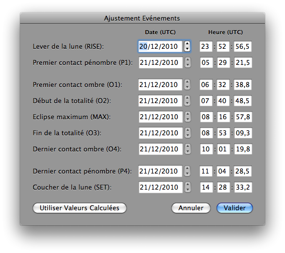

Ajuster les horaires des événements
Pour mettre à jour les horaires des événements dans Lunar Eclipse Maestro vous devez ouvrir le dialogue Ajustement Evénements.
- Dans le menu Observateur sélectionnez Ajuster les horaires…
-
Modifiez les valeurs.

Les valeurs modifiées ne sont pas sauvegardées lorsque vous quittez l’application. Toutefois vous pouvez ajouter ces valeurs dans le script pour qu’elles soient automatiquement mises à jour.